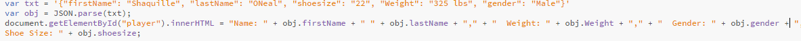
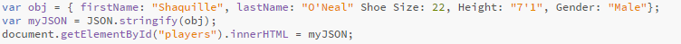

JSON Parse vs JSON Stringify
JSON.stringify serializes a JS object into a JSON string, whereas JSON.parse()
will deserialize a JSON string into a JS object. They are the opposites of each other.
JSON.stringify() serializes a JS object into a JSON string. The JSON.parse() method parses
a string as JSON, optionally transforming the value produced./JSON.stringify()
JSON Parse
A common use of JSON is to exchange data to/from a web server.
When receiving data from a web server, the data is always a string.
Parse the data with JSON.parse(), and the data becomes a JavaScript object

JSON Stringify
A common use of JSON is to exchange data to/from a web server.
When sending data to a web server, the data has to be a string.
Convert a JavaScript object into a string with JSON.stringify().
